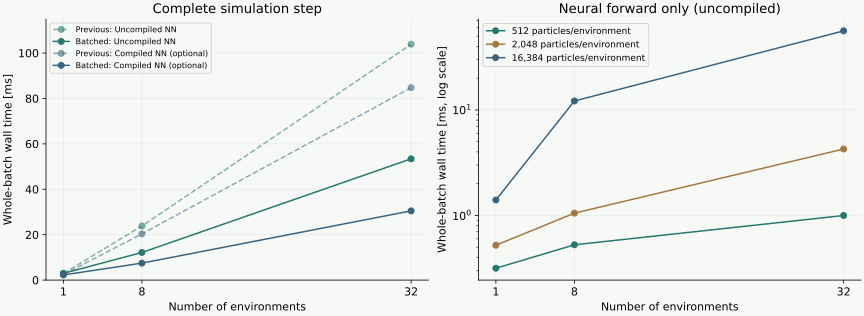

20 October 2026 · RTX 5090 · same shovel checkpoint · 16,384 particles per environment
Implemented: IsaacLab-particle-nerd/examples/particle_nerd_batch. At 32 environments, complete-step median time decreases from 103.88 to 53.41 ms with uncompiled inference, and from 84.75 to 30.49 ms with optional compilation. The new runner captures the complete batched step in one CUDA graph.
| Operation | Previous runner | New runner |
|---|---|---|
| Features and particle update | Dispatch and assemble tensors per environment | Shared batched buffers; GPU kernels process all worlds |
| Neural inference | Batched Transolver | Same weights and architecture; attention remains inside each world |
| Neighbor queries and contact solve | Separate estimator instances | Environment-indexed GPU neighbor grid; one cooperative contact block per world |
| Rigid motion | Separate models and dispatch per environment | One Newton/MJWarp model containing independent worlds |
| CUDA capture | Separate neural/contact/rigid graphs | Complete-step graph on a shared Torch/Warp stream |
There is no Python loop over environments in the simulation step and no particle-state transfer to the CPU. Initialization loads the checkpoint and initial history from disk. Explicit diagnostics and timing synchronize the GPU. The package contains Transolver inference, force estimation and rigid simulation; it has no dependency on the older GNN implementations.

| Environments | Uncompiled: previous → batched [ms] | Compiled: previous → batched [ms] |
|---|---|---|
| 1 | 2.92 → 2.98 | 2.42 → 2.27 |
| 8 | 23.81 → 12.16 | 20.35 → 7.48 |
| 32 | 103.88 → 53.41 | 84.75 → 30.49 |
60 timed steps after 20 warm-up steps. Initialization, compilation, graph capture, diagnostics and rendering are excluded. The batch uses copies of the same settled shovel scene, gravity and initial velocity, without external dragging. Measurements were taken sequentially; small timing differences and different batch arithmetic should not be interpreted as physical improvements.
Compilation remains optional and off by default. It changes floating-point rounding. Earlier five-second compiled and uncompiled shovel rollouts diverged, so this speedup is not yet established as accuracy preserving. The new batching code does not improve the trained model’s material-motion accuracy.
Batching removes repeated dispatch and lets small workloads share GPU resources. It does not remove computation per particle. With 16,384 particles in each world, 32 environments contain 524,288 particles. Their feature projections, particle MLPs and particle-to-slice aggregation all still execute.
| Particles per environment | 1 environment [ms] | 8 environments [ms] | 32 environments [ms] |
|---|---|---|---|
| 512 | 0.32 | 0.53 | 1.00 |
| 2,048 | 0.52 | 1.05 | 4.26 |
| 16,384 | 1.40 | 12.15 | 56.12 |
Small workloads do benefit: at 512 particles per environment, increasing the environment count from 1 to 32 increases time from 0.32 to 1.00 ms, about 3.2× rather than 32×.
Keeping total particle count fixed: 1 × 16,384 takes 1.40 ms; 8 × 2,048 takes 1.05 ms; 32 × 512 takes 1.00 ms. These measurements do not indicate a serial loop over the environment dimension. They instead point to the larger total particle workload as the main reason for the expensive 32 × 16,384 case.
One FP32 slice-weight tensor at 32 × 16,384 occupies 512 MiB: 32 worlds × 4 heads × 16,384 particles × 64 slices × 4 bytes. The existing compiler experiment identifies particle projections, normalization, conversions and aggregation as substantial costs. FlashAttention already handles attention between the 64 slices. CUDA graph replay reduces launch overhead but does not eliminate this particle-dependent work. Peak GPU utilization and the exact memory-versus-compute limit have not been measured.
Neural-only timings use fixed recorded feature subsets, the same checkpoint, BF16 inference and CUDA graphs without compilation. Smaller subsets are a compute experiment, not a validated lower-resolution simulator. These are separate timing runs; do not subtract them from the complete-step timings to estimate component costs.
These checks verify implementation behavior and convergence. They do not establish agreement with MPM, successful scooping or robot locomotion.
The installed Warp native hash grid updates a shared host descriptor. Capturing several instances could allow a later grid to change metadata used by an earlier graph. The new neighbor grid uses its own GPU buffers and environment-specific keys. A second issue concerned Torch allocation lifetimes under Warp-owned capture: the final runner lets Torch own the complete CUDA graph and has Warp join that capture on the same stream. Independent-world and repeated-allocation checks pass with this implementation.
The earlier loop timing used identical worlds. It is a performance baseline, not an accuracy reference for heterogeneous captured grid instances.
cd ~/isaac/IsaacLab-particle-nerd RUN=examples/particle_nerd_batch/run.sh CHECKPOINT="$HOME/isaac/particle_nerd/particle_nerd_plan/results/shovel/training/model/best.pt" EPISODE="$HOME/isaac/particle_nerd/experiments/particle_gnn/shovel/reference/wide-circle.hdf5"
"$RUN" -m particle_nerd_batch.view \ --checkpoint "$CHECKPOINT" --episode "$EPISODE" --num-envs 4
Right-click and drag an intruder. Space pauses or resumes. Worlds are offset for display only; their simulation coordinates remain independent. Use --renderer rtx for Newton RTX.
"$RUN" -m particle_nerd_batch.play \ --checkpoint "$CHECKPOINT" --episode "$EPISODE" \ --num-envs 32 --warmup 20 --steps 60 --output /tmp/batch-32.json
Add --compile to the preceding command. Full-step graph capture is enabled with either setting.
"$RUN" -m particle_nerd_batch.benchmark_nn \ --checkpoint "$CHECKPOINT" --episode "$EPISODE" \ --envs 1 8 32 --particles 512 2048 16384 --output /tmp/nn-scaling.json
sim = Simulation.from_files(checkpoint, episode, environments=32) sim.step(external_wrench) # CUDA [32,6]: world force [N], COM torque [N m] x = sim.positions # CUDA [32,N,3], particle positions [m] v = sim.velocities # CUDA [32,N,3], particle velocities [m/s] pose = sim.body_pose # CUDA [32,7], position [m] and xyzw quaternion sim.reset(mask) # CUDA bool [32], reset only selected worlds
The README includes complete Python imports and additional outputs. Current scope is equal particle counts and one free intruder plus fixed ground per world. Rigid geometry, mass/inertia and contact settings are shared across the batch; particle histories, material feature vectors, rigid initial states and applied loads can differ. Articulated G1 dynamics are not implemented in this runner.
Numerical settings match the previous shovel runner: effective material mass multiplier 180, relaxation 0.075, stabilization 0.01, contact tolerance 1e-9 and iteration limit 2,000; velocity-gradient support radius 0.065 m. The auxiliary contact response does not apply an additional impulse to the learned particle states.
Raw measurements, validation results and installed source hashes. File-level formatting and lint checks pass; the repository-wide changelog check still reports pre-existing unrelated fragments.